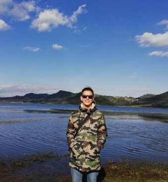

About me!

I'm Juan Sebastian Fonseca, i'm 25 years old and i'm a civil engineering student at the Nueva Granada Military University. With experience in the design and development of software/web applications, I have advanced technical skills and a focus on customer and end-user satisfaction.
I am characterized by the ability to remain calm under pressure and tackle complex challenges with determination. my strong work ethic and focus on constant improvement have led me to obtain outstanding results in my academic evaluations and engineering projects. I'm always looking for ways to exceed expectations and dig deeper into the topics that interest him. My proactive attitude and willingness to collaborate make me a valuable member of group projects and study teams. I am respectful of the opinions of my peers and I foster a cooperative learning environment. My organized nature manifests itself in the way I plan and carry out my research and projects, often resulting in well-informed and innovative solutions.
The synergy between reading and math is evident in his unique approach to problem solving. He finds literary inspiration in clever mathematical solutions and uses mathematical logic to analyze and unravel the complex plots of literary works.
Music is his escape route and his source of inspiration. The melodies and rhythms speak to you in a way that words cannot express. He explores diverse genres, from classical music to experimental jazz, and finds similarities between the musical structures and mathematical patterns he studies. Playing stringed instruments, music allows him to blend his love of technology and art into a single creative expression.
When it comes to technology, Juan Sebastian is aware of the latest innovations and advances, and his enthusiasm for technology goes beyond the mere novelty. He delights in taking devices apart to understand their inner workings and is always eager to learn new programming languages and development techniques. His love for technology is not limited to superficiality; he seeks to understand how he can shape and transform the world around him.
